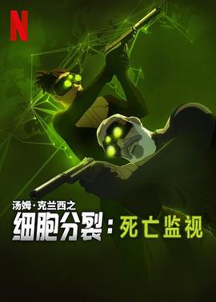

7.0
细胞分裂：死亡监视 第一季
Tom Clancy’s Splinter Cell: Deathwatch Season 1
2025
加拿大
评分 7.0
导演:
费利西安·科尔梅特-达格 / 纪尧姆·杜塞
演员:
列维·施瑞博尔 / 珍妮特·瓦尼 / 柯尔比·豪威尔-巴普蒂斯特 / 米兰达·莱森
类型:
冒险,动作,奇幻,惊悚
剧情简介
一名沉寂已久的传奇特工 Sam Fisher 在退休后隐居农场，试图逃离过去的阴影。却在一天深夜被一位受伤的新晋特工呼救而打破平静——她承载着一个足以撼动国际安全格局的惊人秘密。迫于形势，Fisher 重返战场，重新加入隶属于 Fourth Echelon 的黑暗潜行行动。在夜幕掩护下，他潜入荒废的海岸军事基地、潜伏于柏林地下停车场、以及在北欧雪原的废旧通信塔里与时间竞速。与此同时，新晋特工 Zinnia McKenna 不仅要证明自己的能力，更要找到隐藏在多国情报迷雾中的“第零号任务”线索。两人携手从伦敦雾都到东京高楼，从数字加密战到玻璃屋顶暗杀，追踪不明组织试图引发全球混乱的蛛丝马迹。该剧将“动作爆破”与“心理对峙”并置：枪火与潜行同时上演，信任与背叛交错推动每集发展。动画形式的呈现带来了洗劫夜市、潜入大使馆、劫持无人机的视觉张力。Fisher 不再是无懈可击的英雄，他带着疲惫，也带着对使命的执念。他和 McKenna 之间的互动，既是师徒，也在不断质疑“战斗为了谁？自由还是纪念？”的问题。该作品作为 Tom Clancy’s Splinter Cell 游戏系列的动画化延伸，保持了原作潜行、暗影、对峙的核心精神，同时更新为更为现代的全球化情报战背景。观众跟随Fisher一同再回“隐秘世界”的边缘，体会“光芒之下，最危险的不是敌人，而是看不见的动机”。